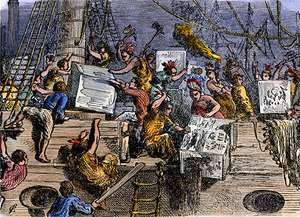

Reasons for the American Revolutionary War
There were many reasons behind the revolutionary war; but the biggest were the taxes put on the American colonists by the British. First is the reasoning for the taxes. Which just happens to be other wars... specifically the French and Indian Wars.It all started when the French decided to start expanding into British claimed lands. Then Virginia's governor sent Major George Washington to remove the French from a fort he and his men came upon a French scouting party. He then ordered his men to "open fire". Thus beginning the war. The war eventually lead to complete British control of Canada. The war completely ended with the Treaty of Paris, which gave all land west of the Mississippi river to the British while The French regained control of two islands. But the price of war is high so to help pay for the war since the American colonists had started the war the British felt it was only fair if they helped to pay for it. So in order to do that they would have to pay taxes on items that the buy.-So since the colonists had to help pay for the war they helped to start they had to pay taxes on items. The first group of taxes became known as the Sugar Act; because sugar was the major item taxed. Although the official name for the taxes was the "American Revenue Act." -After that came the "Quartering Act" which forced the colonists build barracks(the place where soldiers live) for the soldiers to stay and they had to feed them as well. Also if there was not enough space for them in the barracks the innkeepers had to let them stay at their inn(hotel) and provide them food and drink.Those were not the only things forced onto the colonists by the British. One of the most well known taxes was the stamp tax (stamps are used for mail) but it was put onto every document and newspaper.There are many other things that happened but one of the most famous ones is the Boston Tea Party. Where colonists dressed as natives and boarded a trading ship and threw all the tea into the Boston harbor. 